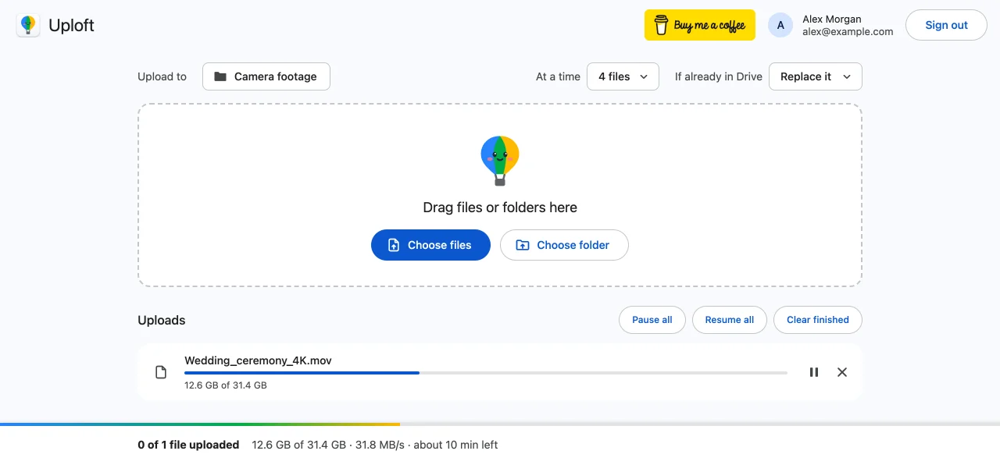

What is the largest file you can upload to Google Drive?
Published · Updated · By Sai Nath
The largest file you can upload to Google Drive is 5 TB. That is the per-file limit for most file types, and Google's Drive API page gives the same figure. The limit that stops most people first is storage: a personal account includes 15 GB, shared with Gmail and Photos.
This guide comes from the maker of Uploft, a Chrome extension. Every Google limit below links to Google's own pages and was checked on 29 October 2026. Google can change them, so the linked page wins if it differs.
Is it 5 TB per file?
Yes. Google's help page on files you can store lists "Up to 5 TB" for files other than Docs, Sheets and Slides. The Drive API limits page says the maximum file size users can upload is 5 TB, and that only the first file that breaks the limit completes uploading. Copies have a lower ceiling of 750 GB.
Why does a free account stop at 15 GB?
The file limit and the storage limit are separate, and storage is the smaller one. Google's storage help page describes a personal account as having up to 15 GB, shared among Drive, Gmail and Photos. When it is full, you can't upload or create files in Drive. Items in Trash and Spam keep counting until they are permanently cleared. A 5 TB file is allowed in principle, but it needs storage to match.
Is there a separate maximum upload size?
No. The 5 TB figure is the maximum upload size. Two other limits sit beside it. The first is the daily limit: Google's Drive API page says Google Workspace users can upload 750 GB per day across My Drive and all shared drives, and that the limit also applies to copies. A user who uploads a file larger than 750 GB can't upload or copy more files until 24 hours have passed. The second is storage, covered above. The upload limits guide sets all of them in one table.
What hits first for a 100 GB file?
On a personal account, storage. A 100 GB file is far under the 5 TB file limit and under the 750 GB daily figure. But 100 GB is more than the 15 GB included, so the account needs at least 100 − 15 = 85 GB more space before the file can fit, even with nothing else stored. On a Workspace plan with enough pooled storage, nothing stops it, and the remaining problem is time.
At 20 Mbps, 100 GB takes 100 × 8,000 megabits ÷ 20 Mbps = 40,000 seconds, about 11 hours 7 minutes. That is long enough for a dropped connection or a closed tab to matter. See how to upload large files.
Do Docs, Sheets and Slides have smaller limits?
Yes, when a file is converted to a Google format. Google's help page lists up to 1.02 million characters for a Google Doc (50 MB when converting a text document), up to 20 million cells or 100 MB for a Google Sheet, and up to 100 MB for a presentation converted to Google Slides. A file kept in its original format, such as a .xlsx or .pptx, falls under the 5 TB limit.
What does Uploft change?
None of these limits. Uploft is a free Chrome extension (Chrome 116 or later) with public source code. It can't raise a Google limit. What it does is keep a long upload alive up to the limit: its uploader sends files with Drive's resumable uploads, carries on after a dropped connection, a closed tab or a restart, and sizes the pieces to the connection, starting at 8 MiB and growing up to 64 MiB when the link is quick.

Uploft is free, and its source code is public. It isn't on the Chrome Web Store yet; the home page shows what it does and what it asks for.
Sources
Checked on 29 October 2026.
- Google Drive Help: Files you can store in Google Drive.
- Google for Developers: Google Drive API usage limits.
- Google Drive Help: Manage your storage in Drive, Gmail & Photos.
- Uploft: source code (upload engine).